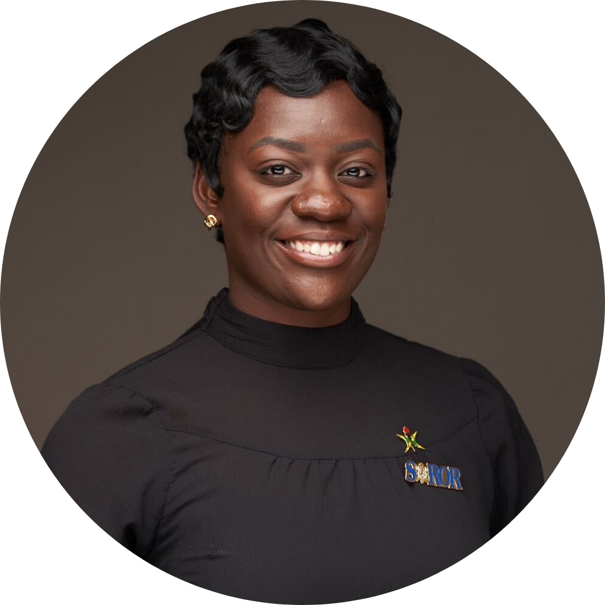

I knew Brown was the right choice for me because its Computer Science program had already demonstrated a strong commitment to Social Responsibility in Computing -exactly the kind of environment I was seeking to fuel my passion for using technology to drive meaningful, positive change. Before coming to Brown, I worked in industry for 6 years in SWE and Cloud Engineering roles at Staples Corporate HQ, BNY Mellon, and now Circle. Alongside my technical career, I also dedicated five years to advancing equity in tech as an executive board member of the Boston-based nonprofit, the National Society of Black Engineers (NSBE). My time on the NSBE executive board shaped my commitment to inclusive innovation. In my free time, I am a professional member of the National Society of Black Engineers and Sigma Gamma Rho Sorority, Inc. I also enjoy graphic design, reading, and playing flag football.